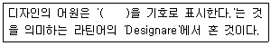
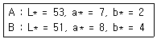

컬러리스트산업기사 (2013-06-02 기출문제)
1과목: 색채심리
1. 색채마케팅전략의 발전과정이 틀린 것은?
- 1단계 : 매스마케팅
- 2단계 : 표적마케팅
- 3단계 : 윈윈마케팅
- 4단계 : 맞춤마케팅
(정답률: 64%)

2. 효과적인 커뮤니케이션의 경로가 옳게 연결된 것은?
- 소스 → 메세지 → 경로 → 수신자
- 소스 → 경로 → 메세지 → 수신자
- 메시지 → 소스 → 경로 → 수신자
- 메세지 → 경로 → 소스 → 수신자
(정답률: 38%)
3. 바디 샵의 제품과 매장에서 제시하는 색채의 이미지로 가장 거리가 먼 것은?
- 환경주의
- 녹색주의
- 브랜드 이미지
- 구조주의
(정답률: 75%)
4. 색의 상징에서 우아, 위엄과 관계있는 색은?
- red
- green
- purple
- yellow
(정답률: 알수없음)
5. 유채색 중 운동량이 활발하고 생명력이 뛰어나 역삼각형이 연상되는 색채는?
- 빨강
- 노랑
- 파랑
- 검정
(정답률: 91%)
6. 색의 연상에 관한 설명 중 틀린 것은?
- 빨강 주황 등은 식욕을 증진시키는데 효과적인색이다.
- 황색은 활동적이며 화려함과 만족감을 준다.
- 검정색은 죽음을 연상시켜 산업제품의 색으로는 부적합하다.
- 녹색은 희망, 안정, 휴양을 느끼게 한다.
(정답률: 알수없음)
7. 대상의 표면색에 대한 무의식적인 추론에 의해 결정 되는 것은?
- 기억색
- 항상성
- 착시
- 대비
(정답률: 알수없음)
8. 색채마케팅 전략의 영향 요인과 관련한 내용 연결이 틀린 것은?
- 인구 통계적 환경 - 환경주의적 색채 마케팅
- 사회, 문화적 환경 - 소비자의 라이프 스타일
- 기술적 환경 - 디지털 패러다임
- 경제적 환경 - 총체적 경기 흐름에 따른 제품의 색채
(정답률: 알수없음)
9. 카스텔(Castel)은 색채/음악의 척도를 연구하고 각 음계와 색을 연결하였다. 다음 중 그 연결이 틀린 것은?
- A - 보라
- C - 청색
- D - 녹색
- E - 적색
(정답률: 100%)
10. 다음 중 수수한 느낌이 드는 색은?
- 고채도, 고명도의 색
- 저채도, 고명도의 색
- 고채도, 저명도의 색
- 저채도, 저명도의 색
(정답률: 55%)
11. 색채조사를 위한 심리척도 항목을 구성하는 형용사가 옳은 것은?
- 연한 - 약한
- 차분한 - 중후한
- 좋은 - 부드러운
- 맑은 - 탁한
(정답률: 70%)
12. 안전색은 식별성을 높이기 위해 대비색과 조화시킨다. 안전색 - 대비색의 예가 옳은 것은?
- 빨강 - 노랑
- 주황 - 파랑
- 초록 - 흰색
- 자주색 - 흰색
(정답률: 70%)
13. 색채를 기능적으로 활용하여 언어를 사용하지 않고도 언어적인 정보를 전달하는 기능을 많이 하고 있다. 다음 중 이러한 언어적 기능을 대신하고 있는 것으로 볼 수 없는 것은?
- 여자 화장실 문을 빨간 원을, 남자 화장실 문에는 파란원을 그려 넣었다.
- 지하철의 A호선은 빨간색, B호선은 초록색으로 표시하였다.
- 더운 물은 빨간색 손잡이를, 차가운 물은 파란색 손잡이를 설치하였다.
- 선물을 빨간색 포장지와 금색 리본 테이프로 포장하였다.
(정답률: 90%)
14. 빛 자극의 물리적 특성이 변화하더라도 물체의 색채가 변하지 않고 그대로 유지되는 색채감각은?
- 색상대비
- 색채항상성
- 기억색
- 잔상
(정답률: 87%)
15. Soft 톤의 추상적인 연상언어로만 묶인 것은?
- 검소한, 차분한, 튼튼한, 단단한
- 상쾌한, 밝은, 귀여운, 맑은
- 차분한, 탁한, 낡은, 수수한
- 부드러운, 상냥한, 희미한, 온화한
(정답률: 100%)
16. 자동차에 대한 국내 소비자의 선호색을 알아보고자 할 때 고려할 사항으로 가장 거리가 먼 것은?
- 출신국가
- 연령
- 성별
- 교육수준
(정답률: 알수없음)
17. 색채의 연상과 상징에 대한 설명이 틀린 것은?
- 특성 색채의 연상은 개인적 경험에 따라 달라질 수 있다.
- 계급은 색채로 구분한 것은 색채의 선호현상으로 볼 수 있다.
- 색채는 시대를 초월하고 지역성을 넘어 전혀 다른 의미를 갖는 경우가 많다.
- 색채는 의식적으로 언어를 대신하여 의미를 함축하여 사용할 수 있다.
(정답률: 73%)
18. 지역색과 풍토색에 대한 설명 중 틀린 것은?
- 풍토색은 특정 지역의 기후와 토지의 색 및 바람과 태양의 색을 의미한다.
- 지리적으로 근접하거나 기후가 유사한 국가나 민족이라도 풍토색은 현저한 차이가 있다.
- 지역색은 각 지역을 대표하는 특정 지역에서 추출된 색채이다.
- 일본은 지역색은 회색, 진한 브라운이다.
(정답률: 40%)
19. 색채 선호 경향에 관한 일반적인 사항으로 틀린 것은?
- 서구문화권 - 보라, 자주, 빨강
- 라틴계 - 풍부한 태양광선으로 난색계열
- 성인남성 - 파랑과 같은 특정색에 편중
- 아동기 - 장파장의 빨간색과 노란색
(정답률: 알수없음)
20. 세계인이 모이는 국제회의장소에 안정을 대비하여 색채설계를 하고자 할 때 잘못된 것은?
- 노랑은 장애물 또는 위물에 대한 경고
- 빨강은 소방기구에 적용되는 색채
- 초록은 구급장비, 심장약, 의약품
- 파랑은 안전대피장소를 안내
(정답률: 80%)
2과목: 색채디자인
21. 데니스 가보에 의해 개발된 레이저를 이용한 입체적 표현매체는?
- 픽토그램
- 홀로그램
- 다이어그램
- 플라즈마
(정답률: 알수없음)
22. 바우하우스에 대한 설명으로 틀린 것은?
- 바이마르의 바우하우스 교육의 중심적인 인물은 이텐(Itten, Johannes)이다.
- 대량생산과 단순하고 합리적인 양식 등 디자인의 근대화를 추구한다.
- 예술창작과 공학 기술의 통합을 주장한 새로운 교육기관이며 연구소이다.
- 현대건축, 회화, 조각, 디자인 운동에 영향을 주었다.
(정답률: 50%)
23. P.O.P 광고의 특징과 거리가 먼 것은?
- 현장성
- 호소력
- 장식성
- 유사성
(정답률: 알수없음)
24. 다음 중 셀 애니메이션에 대한 설명이 틀린 것은?
- 검은 종이 뒤에 빛을 비추어 절단된 틈으로 새어나오는 빛을 한 컷씩 촬영하여 만든다.
- 디즈니의 미키마우스, 백설공주, 미야자키하야오의 토토로 등이 대표적인 예이다.
- 동영상 효과를 내기 위하여 1초에 24장의 서로 다른 그림을 연속시킨 것이다.
- 셀 애니메이션은 배경 그림위에 투명한 셀로판지에 그려진 그림을 겹쳐 찍는 방법이다.
(정답률: 알수없음)
25. 실내공간디자인에 관한 설명 중 틀린 것은?
- 서로 대립되는 형태, 색채는 활기 있는 분위기를 조성한다.
- 재료와 조명은 쾌적성을 확보해야 한다.
- 보조색은 공간의 기본적인 분위기를 정하게 한다.
- 벽보다 어두운 색의 천장은 공간을 낮아 보이게 한다.
(정답률: 알수없음)
26. 제품의 색채를 통일시켜 대량생산하는 것과 가장 관계가 깊은 디자인 조건은?
- 심미성
- 경제성
- 독창성
- 합목적성
(정답률: 82%)
27. 배색 방법에서 주조색 - 보조색 - 강조색의 이반적인 범위는?
- 90% 77% - 3%
- 70% - 25% - 5%
- 50% - 40% - 10%
- 50% - 30% - 20%
(정답률: 79%)
28. ( )에 가장 적합한 용어는?

- 자연
- 실용
- 조형
- 계획
(정답률: 알수없음)
29. 1935년 미국에서 공기역학적 운송수단에 대한 탐색으로 시작된 형태로 주방용품이나 가정용품에까지도 나타났던 형태는?
- 타원형
- 마름모형
- 원형
- 유선형
(정답률: 70%)
30. 굿 디자인(Good Design)의 조건에 대한 설명이 틀린 것은?
- 합목적성 - 디자인을 요구하는 사회적 여건과 종합적인 이해보다는 디자이너의 주관적·창의적 개성이 요구된다.
- 심미성 - 형태, 재질, 색채의 아름다움기 기능과 유기적으로 구현될 때 이루어진다.
- 경제성 - 디자이너는 재료와 생산방식에 대한 깊은 지식을 갖추었을 때 이를 효과적으로 수행 할 수 있다.
- 독창성 - 어떤 사물을 새롭게 만들어 내는 것으로 디자이너의 끊임없는 노력이 계속되어야한다.
(정답률: 알수없음)
31. 디자인의 원리에 대한 설명으로 틀린 것은?
- 대비는 시각적 힘의 강약에 의한 형의 감정효과이다.
- 비대칭은 형태상의 불균형이지만, 시각상의 힘의 정돈에 의하여 균형이 잡힌다.
- 등비수열에 의한 비례는 1:2:4:8:16...과 같이 이웃하는 두 항의 차이가 일정한 수열에 의한 비례이다.
- 강조는 새로운 규칙성을 규정하고자 할 때와 균형을 주고자 할 때 이용하면 효과적이다.
(정답률: 알수없음)
32. 독일 공작연맹에 대한 설명이 틀린 것은?
- 헤르만 무지테우스의 제창으로 건축, 공업가, 공예가들이 모여 결성된 디자인 진흥 단체이다.
- 우수한 미적 기준을 표준화하여 대량생산하고, 수출을 통해 독일의 국부 증대를 목표로 하였다.
- 질을 추구하면서도 동시에 대량생산에 의한 양을 긍정하여 모던디자인의 탄생하는 길을 열었다.
- 조형의 추상성과 기하학적 간결한 형태의 경제성에 입각한 디자인을 추구하였다.
(정답률: 70%)
33. 유사, 대비, 균일, 강화와 관련 있는 디자인 원리는?
- 통일
- 조화
- 균형
- 리듬
(정답률: 60%)
34. 로고, 심벌마크, 캐릭터 뿐 아니라 명함 등의 서식류와 외부적으로 보이는 사인 시스템에서 기업의 이미지를 일관성 있게 보여주고 관리하는 시각디자인의 방법은?
- P.O.P
- B.I
- Super Graphic
- C.I.P
(정답률: 알수없음)
35. 색채 원근감을 도입하여 색채의 공간감을 표현하는 원리를 응용, 그 정도에 따라 무한한 공간의 깊이를 느끼게 하는 방법을 나타낸 디자인 시조는?
- 미니멀아트
- 옵아트
- 페미니즘
- 플럭서스
(정답률: 알수없음)
36. 인간과 자연을 잇는 유기적 디자인 분야는?
- 시각디자인
- 환경디자인
- 제품디자인
- 의상디자인
(정답률: 알수없음)
37. 주거공간의 색채계획 순서를 옳게 나열한 것은?
- 주거자 요구 및 시장성 파악 → 고객의 공감 획득 → 이미지 콘셉트 설정 → 색채 이미지 계획
- 고객의 공감 획득 → 주거자 요구 및 시장성 파악 → 이미지 콘셉트 설정 → 색채 이미지 계획
- 주거자 요구 및 시장성 파악 → 이미지 콘셉트 설정 → 색채 이미지 계획 → 고객의 공감 획득
- 이미지 콘셉트 설정 → 주거자 요구 및 시장성 파악 → 고객의 공감 획득 → 색채 이미지 계획
(정답률: 알수없음)
38. 디자인을 하는 목적으로 방법, 용도, 필요성, 텔레시스, 연상, 미학들의 6가지 포괄적인 의미로 복합기능이라고 규정지은 사람은?
- 빅터 파파넥
- 루이스 설리반
- 모홀리 나기
- 토마스 말도나도
(정답률: 85%)
39. 문화와 언어를 초원해서 직관적으로 이해할 수 있도록 한 그림문자로서의 그래픽 심벌을 뜻하는 용어는?
- 픽토그램(Pictogram)
- 아이소타이프(Isotype)
- 아이덴티티(Identity)
- 심벌마크(Symbol Mark)
(정답률: 77%)
40. 다음 중 게슈탈트(Gestalt)의 그루핑 법칙 중 가장 일반적인 것에 해당되지 않는 것은?
- 근접성
- 폐쇄성
- 유사성
- 상관성
(정답률: 79%)
3과목: 섹채관리
41. 오목판 인쇄방식으로 그라데이션 효과가 풍부하여 사진 인쇄에 가장 적합한 인쇄방식은?
- 패드 인쇄
- 평판 인쇄
- 프린트 배선 인쇄
- 그라비어 인쇄
(정답률: 59%)
42. CCM(컴퓨터자동배색)은 기준색의 분광반사율과 일치 되도록 처방을 내는 것이다. 이를 의미하는 용어는?
- 무조건 등색
- 상관색 온도
- 메타머리즘
- 색변이 지수
(정답률: 42%)
43. 육안검색과 측색기 측정에 대한 설명으로 틀린 것은?
- 육안검색 시 감성적인 판단이 이루어질 수 있다.
- 측색기는 동일 샘플에 대해 거의 일정한 측색값을 낸다.
- 육안검색은 관찰자 차이가 없다.
- 필터식 색채계와 분광계의 측색값은 서로 다를 수 있다.
(정답률: 알수없음)
44. 분광광도계의 설명으로 틀린 것은?
- 조명 각도는 항상 같은 조건에서 측정할 수 있다.
- 분광반사율을 측정할 수 있다.
- 시야를 바꿔 색채값을 얻으려면 시료의 개구부를 바꿔야한다.
- 다양한 광원조건 하에서 색채값을 얻을 수 있다.
(정답률: 알수없음)
45. 다음 중 색 표시계 X10Y110Z10에서 숫자 10이 의미하는 것은?
- 10회 측정 평균치
- 10°시야 측정치
- 측정 횟수
- 표준 광원의 종류
(정답률: 39%)
46. 다음 중 색온도에 대한 설명이 옳은 것은?
- 색온도는 광원의 실제 온도이다.
- 높은 색온도는 붉은 색계열의 따뜻한 색에 대응된다.
- 백열등은 6000K 정도의 색온도를 지녔다.
- 백열등과 같은 열광원은 흑체의 색온도로 구분한다.
(정답률: 20%)
47. 수은램프에 금속할로겐 화합물을 첨가하여 만든 고압 수은등으로, 효율과 연색성이 높은 조명용 광원은?
- 할로겐 전구
- 발광다이오드
- 메탈할라이드등
- 크세논램프
(정답률: 55%)
48. CMS(Color Management System)에서 사용되는 변환에 관한 설명 중 옳은 것은?
- RGB 데이터를 CMYK 색공간으로 변환할 때 색 영역이 넓어져 색상 손실이 없다.
- 변환은 이미지 편집 프로그램 또는 프린터 드라이버에서 한 번만 이루어져야 한다.
- 소스 프로패일과 목적지 프로파일이 동일 할 때에도 약간의 변환이 이루어진다.
- 변환은 같은 컬러모드 (예:RGB와 RGB) 사이에서만 가능하다.
(정답률: 알수없음)
49. 다음 중 맥아담의 편차 타원을 정량화하기 위해서, 프릴레, 맥아담, 칙커링에 의해 만들어진 색차는?
- CIE94
- BFD(1:C)
- CMC
- FMC-2
(정답률: 알수없음)
50. 디지털 이미지에서 시안, 마젠타, 노랑, 검정 4색상이 재생되는 매체인 것은?
- CRT 모니터
- 빔 프로젝터
- 필름 스캐너
- 컬러 프린터
(정답률: 100%)
51. 두 견본 A, B를 측정한 결과가 다음과 같을 때 색차(ΔΕ)는 얼마인가?

- 9.0
- 6.0
- 3.0
- 1.0
(정답률: 알수없음)
52. 다음 중 입력장치로 옳은 것은?
- 컬러 프린터
- 디지타이저
- 필름 리코더
- 음극선과
(정답률: 20%)
53. 다음 중 염료의 종류와 설명이 틀린 것은?
- 형광염료 : 화학적 성분은 스틸벤·이미다졸·쿠마린 유도체 등이며, 소량만 사용해야 하는 염료
- 합성염료 : 명칭은 일반적으로 제조회사에 의한 종별 관칭, 색상, 부호의 세부분으로 이루어짐
- 식용염료 : 식료, 의약품, 화장품이 착색에 사용되는 것
- 천연염료 : 어떠한 가공도 없이 천연물 그대로만을 염료로 사용하는 것
(정답률: 알수없음)
54. CCM(Computer Color Maching)의 특징으로 거리가 먼 것은?
- 소재의 변화에 신속히 대응하는데 도움을 준다.
- 조색시간을 단축할 수 있다.
- 다품종 소량생산에는 불리하지만 소품종 대량생산의 효율을 높이는 데는 유리하다.
- CCM 소프트웨어는 Quality Control 부분과 Formulation 부분으로 구성되어 있다.
(정답률: 알수없음)
55. 옵셋 인쇄기나 RIP을 이용하는 대형 잉크젯 프린터를 프로파일링하기 전에 각 잉크마다의 농도 단계가 균일하게 분포되도록 조정하는 작업은?
- 선형화(Linearization)
- 수치화(Quantification)
- 최대농도조절(Maximum-Density Control)
- 특성화(Characterization)
(정답률: 알수없음)
56. 조색사가 색료를 선택할 때 고려해야 하는 조건 중 가장 중요한 것은?
- 색공간 변환
- 샘플컬러 패치
- 다양한 광원에서의 색채현시
- 형광색채
(정답률: 알수없음)
57. 페놀프탈레인과 가장 관련된 것은?
- 형광색료
- 백색기준물
- 기준광료
- 절대기준물
(정답률: 59%)
58. 반사색 측정에서 필터식 방식이나 분광식 방식의 모든 측색기에 색채 측정의 기준으로 사용되는 교정물은?
- 색채측정방식
- 백색기준물
- 기준광로
- 절대기준물
(정답률: 40%)
59. 다음 중 색소가 아닌 것은?
- 니트로
- 아민
- 아조
- 카르보닐
(정답률: 30%)
60. 측색의 목적이 바르게 연결된 것은?
- 색의 관리, 색의 커뮤니케이션, 조색
- 색의 관리, 색의 커뮤니케이션, 연색
- 색의 전달, 표색, 조색
- 색의 전달, 연색, 표색
(정답률: 알수없음)
4과목: 색채지각의이해
61. 색의 3속성 중 명도만 지니는 색은?
- 보색
- 유채색
- 무채색
- 순색
(정답률: 93%)
62. 다음 중 녹색과 빨강의 가법혼합으로 얻어지는 색의 파장으로 옳은 것은?
- 430nm
- 580nm
- 650nm
- 750nm
(정답률: 알수없음)
63. 다음 배색 중에서 명도대비가 가장 크게 일어나는 것은?
- 5R 6/2 - N5
- 2.5Y 7/2 - N9
- 5R 6/2 - 2.5Y 7/6
- 2.5 7/2 - N3
(정답률: 54%)
64. 원반의 반을 흰색, 검은색으로 칠한 후 회전시켰을 때 유채색을 경험하는 효과는?
- 뉴턴 효과
- 페흐너 효과
- 몬드리앙 효과
- 카스텔 효과
(정답률: 83%)
65. 색의 동화에 대한 설명으로 옳은 것은?
- 색의 다른 색 위에 넓혀가는 것처럼 보이기 때문에 전파효과라고도 부른다.
- 배경 위에 놓인 색과 상관없이 항상 같은 색으로 보이는 현상이다.
- 배경 위에 놓인 이미지가 크고 굵을수록 동화현상이 잘 일어난다.
- 색상과 채도에 의해서만 동화현상이 일어난다.
(정답률: 62%)
66. 페인트 통에 들어있는 페인트 색과 벽면에 칠한 색이 다르게 느껴지는 현상과 관계있는 것은?
- 명도대비
- 채도대비
- 동시대비
- 면적대비
(정답률: 알수없음)
67. 수술실의 주조색을 청록색으로 하는 것과 가장 밀접한 관련이 있는 것은?
- 정의 잔상
- 부의 잔상
- 색상동화
- 색상대비
(정답률: 87%)
68. 푸르킨예 현상에 대한 설명이 틀린 것은?
- 추상체에서 간상체로 이동할 때 생기는 현상이다.
- 파장이 긴 색이 먼저 사라지고 파장이 짧은 색이 나중에 사라진다.
- 새벽이나 초저녁에 물체가 푸르스름하게 보이는 것은 이 현상 때문이다.
- 야간작업 시 주목성을 높이기 위헤서 주황색 안전모를 착용한다.
(정답률: 75%)
69. 점을 찍어가며 그림을 그렸던 인상주의 점묘파 화가들은 색의 어떤 혼합을 이용하였는가?
- 병치혼합
- 가산혼합
- 감산혼합
- 회전혼합
(정답률: 82%)
70. 계시대비에 대한 설명으로 옳은 것은?
- 적색을 본 후 황색을 보게 되면 황색은 연두색에 가까워 보인다.
- 노란색 위의 주황은 상대적으로 붉은 주황으로 보인다.
- 빨강과 파랑의 대비는 빨강을 더욱 따뜻하게, 파랑을 더욱 차게 느끼게 한다.
- 줄무늬와 같이 주위 색의 영향으로 인접색에 가까워지는 현상이다.
(정답률: 73%)
71. 다음 중 오랜 시간을 있어야 하는 사무 공간에 적합한 색은?
- 흰색
- 난색계
- 한색계
- 핑크계
(정답률: 80%)
72. 색채에 대한 심리 반응에 관한 설명 중 틀린 것은?
- 보라와 초록은 중간 온도의 느낌을 주는 색이다.
- 채도가 높은 색은 강한 느낌을 주어 디자인에서 악센트로 사용이 되기도 한다.
- 차가운 색이나 명도가 낮은 색은 내부로 위축되려는 성격 때문에 수축색이 된다.
- 명도가 높고 채도가 높은 색의 배색은 중후해 보인다.
(정답률: 알수없음)
73. 다음 중 베졸트 브뤼케 현상에 대한 설명으로 옳은 것은?
- 흰색 배경에 검정색 격자무늬로서 격자의 교차점에 희색 점이 지각되는 현상
- 색자극의 순도가 달라지면 지각되는 색의 밝기가 변하는 현상
- 색자극의 밝기가 달라지면 그 색상이 다르게 보이는 현상
- 파장이 같아도 색의 순도가 변함에 따라 그 색상이 변하는 현상
(정답률: 40%)
74. 다음 중 색의 물리적 정의로 틀린 것은?
- 색의 빛의 파장 중에서 380nm에서 780nm로 사람의 눈으로 보이는 영역을 말한다.
- 적외선은 380nm 이하의 짧은 파장을, 자외선은 780nm 이상의 긴 파장을 말한다.
- 운동하는 빛은 물체, 공기 입자, 미립자 등을 만나면 여러가지 현상으로 반응한다.
- 파장의 길이에 따라 여러 가지 특성을 지닌 빛으로 나타난다.
(정답률: 89%)
75. 다음 중 자연광 아래에서 같은 크기일 때 색의 명시도가 가장 높은 것은?
- 검정바탕 위의 노랑 글씨
- 노랑바탕 위의 파랑 글씨
- 검정바탕 위의 흰색 글씨
- 노랑바탕 위의 검정 글씨
(정답률: 알수없음)
76. 추상체와 간상체에 대한 설명이 옳은 것은?
- 간상체는 명암을 볼 수 있는 세포가 있으며, 맹점에 밀집되어 있다.
- 추상체는 색을 감지하는 세포가 있으며, 중심와에 밀집되어 있다.
- 간상체에 이상이 있으면 적녹색맹, 황정색맹이 된다.
- 추상체의 이상은 빛을 감지하지 못하는 맹인이 된다.
(정답률: 60%)
77. 다음 중 색의 파장 영역과 색의 연결이 틀린 것은?
- 450 ~ 500nm : 보라
- 500 ~ 570nm : 초록
- 590 ~ 620nm : 주황
- 620 ~ 700nm : 빨강
(정답률: 60%)
78. 색료의 삼원색 중 시안(Cyan)과 마젠타(Magenta)를 혼합했을 때의 색은?(오류 신고가 접수된 문제입니다. 반드시 정답과 해설을 확인하시기 바랍니다.)
- Green
- Orange
- Red
- Blue
(정답률: 알수없음)
79. 물리적으로 다르지만 지각적으로 동일한 것으로 경험되는 자극흔?
- 단성체
- 복합체
- 이성체
- 신성체
(정답률: 10%)
80. 진출색에 관한 내용으로 틀린 것은?
- 노란색이 파란색보다 진출해 보인다.
- 분홍색이 자주색보다 진출해 보인다.
- 밝은 노란색이 어두운 노란색보다 진출해 보인다.
- 어두운 회색이 초록보다 진출해 보인다.
(정답률: 알수없음)
5과목: 색채체계의이해
81. 오스트발트 색체계의 색표기방법인 12pg에 대한 의미가 옳게 나열된 것은?(단, 12 - p - g의 순으로 나열)
- 색상, 흑색량, 백색량
- 순색량, 흑색량, 백색량
- 색상, 백색량, 흑색량
- 순색량, 명도, 채도
(정답률: 60%)
82. 오스트발트 조화론의 기본 개념은?
- 대비
- 질서
- 자연
- 감성
(정답률: 알수없음)
83. 다음 중 가장 차가운 느낌을 나타낼 수 있는 배색은?
- N2, 7.5R, 5/8
- N9, 7.5BG 3/8
- N5, N9
- 7.5YR 5/8, 7.5BG 3/8
(정답률: 알수없음)
84. 반복효과에 의한 배색에 대한 설명으로 틀린 것은?
- 두 가지 이상의 색으로 일정한 질서를 기본으로 하여 조화를 주는 방법이다.
- 체크무늬, 줄무늬, 배색도 반복효과에 의한 배색이다.
- 트리콜로(Tricolore) 배색의 기법도 반복효과에 의한 배색이다.
- 타일의 배색은 일정한 형태와 색을 반복하여 배열한 것이다.
(정답률: 알수없음)
85. 다음 중 동물에서 유리한 색이름은?
- 옥색
- 라벤더색
- 피콕그린
- 프러시안블루
(정답률: 37%)
86. 먼셀의 색채조화와 관련이 있는 것은?
- 보색이론
- 균형이론
- 4원색론
- 동일색상 조화론
(정답률: 알수없음)
87. 다음 중 국제적인 색채표준으로 인정되고 있는 색채체계는?
- NCS 색체계
- CMYK 색체계
- RGB 색체계
- 비렌의 색체계
(정답률: 80%)
88. 다음 중 혼색계의 색체계는?
- XYZ 색체계
- NCS 색체계
- DIN 색체계
- Munsell 색체계
(정답률: 62%)
89. 먼셀 색체계에 대한 설명 중 틀린 것은?
- 색 지각의 삼속성인 색상, 명도, 채도를 기반으로 두었다.
- 색상은 R, Y, G, B, P의 주요 5색과 5색의 중간 색상을 정해 10색상으로 한다.
- 모든 색상에 대해 명도는 10단계, 채도는 14단계로 표기된다.
- 한국산업표준에서 채택하고 있는 색체계이다.
(정답률: 알수없음)
90. 기본개념으로 헤링이 저술한 "색에 대한 감정의 자연적 시스템"을 채택하였으며 노르웨이, 스페이, 스웨덴의 국가표준색을 제정하는데 기여한 색체계는?
- NCS 색체계
- CIE 색체계
- DIN 색체계
- P.C.C.S 색체계
(정답률: 62%)
91. 먼셀 색입체의 수직 단면도에서 볼 수 없는 것은?
- 다양한 색상환
- 다양한 명도
- 다양한 채도
- 보색 색상면
(정답률: 42%)
92. ISCC-NIST 색명법에 대한 설명이 아닌 것은?
- 한국산업표준과 다른 점은 '올리브'가 색상으로 포함되어 있다.
- 명도와 채도를 함께 표현하는 톤 개념을 가진다.
- 명도는 10단계, 채도는 3단계로 분류한다.
- 기본 색이름에 각 형용사를 붙여 267개의 색이름 범위로 표현한다.
(정답률: 67%)
93. P.C.C.S 색체계의 기본 색상 수는?
- 8색
- 12색
- 24색
- 36색
(정답률: 알수없음)
94. 다음 중 색채 표준화의 조건이 아닌 것은?
- 색채 표기의 국제 기호화
- 색채간의 지각적 등보성
- 규칙적인 배열
- 특수질감과 특수안료를 이용한 색채재현
(정답률: 알수없음)
95. 다음 중 색채 표준화의 조건이 아닌 것은?
- 황색과 흑색이 조화되어 유황색의 간색이 생성된다.
- 청색과 황색이 조화되어 녹색의 간색이 생성된다.
- 적색과 백색이 조화되어 자색의 간색이 생성된다.
- 청색과 백색이 조화되어 벽색의 간색이 생성된다.
(정답률: 100%)
96. 미도를 나타내는 공식(M = 0/C)에 대한 설명으로 옳은 것은?
- 0 : 질서의 요소, C : 복잡성의 요소
- 0 : 부조화의 요소, C : 질서의 요소
- 0 : 조화의 요소, C : 부조화의 요소
- 0 : 복잡성의 요소, C : 질서의 요소
(정답률: 70%)
97. 다음 중 L*C*h 색공간에서 색상각 90°에 해당하는 색은?
- 빨강
- 노랑
- 초록
- 파랑
(정답률: 알수없음)
98. 오스트발트 색체계에 대한 설명이 틀린 것은?
- 규칙적이고 합리적이어서 수치상으로 완벽하게 구성되어 있다.
- 색분량은 순색량, 백색량, 흑색량을 10단계로 나누었다.
- 색상은 헤링의 4원색을 기본으로, 중간에 O, P, T, SG를 더해 8색상으로 한다.
- 현대에 와서는 색채조화의 원리와 회전혼색을 이용한 색채혼합의 기초원리에 영향을 준 것으로 평가된다.
(정답률: 알수없음)
99. P.C.C.S 색체계의 주요 4색상이 아닌 것은?
- 빨강
- 노랑
- 파랑
- 보라
(정답률: 알수없음)
100. 저드(Judd)의 색채조화론과 관련이 없는 것은?
- 질서서의 원리
- 친근성의 원리
- 균형성의 원리
- 명료성의 원리
(정답률: 알수없음)